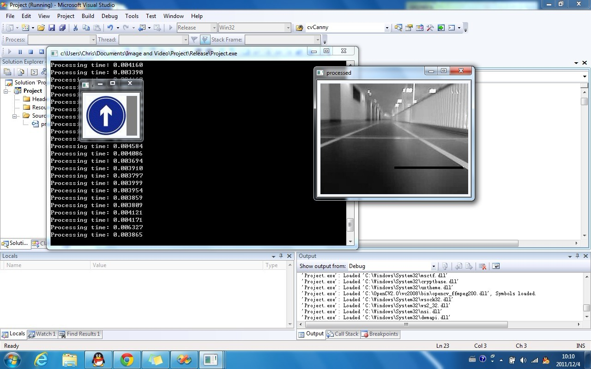
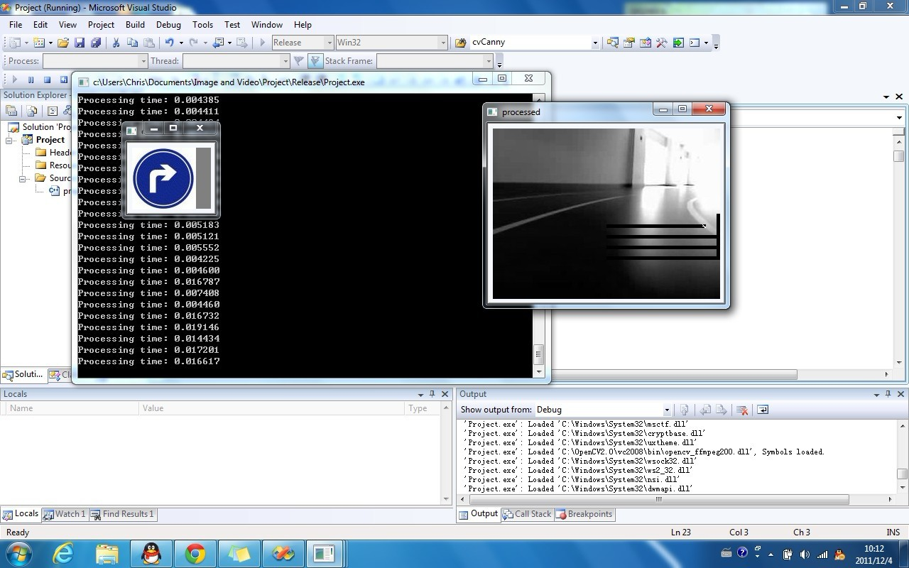
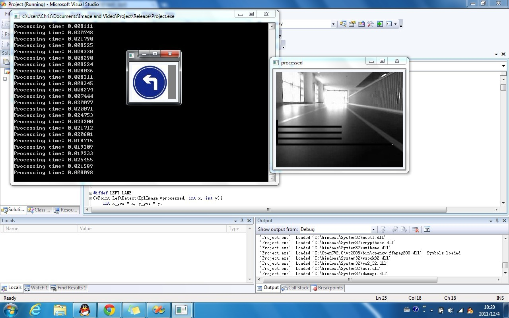
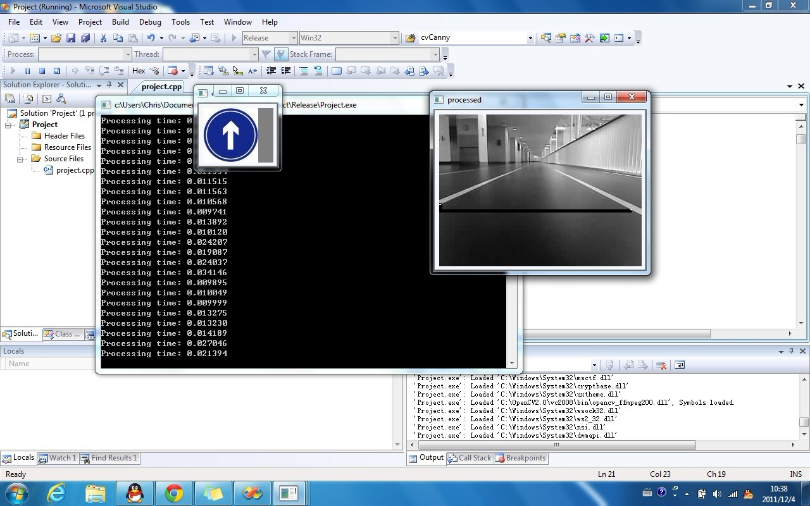
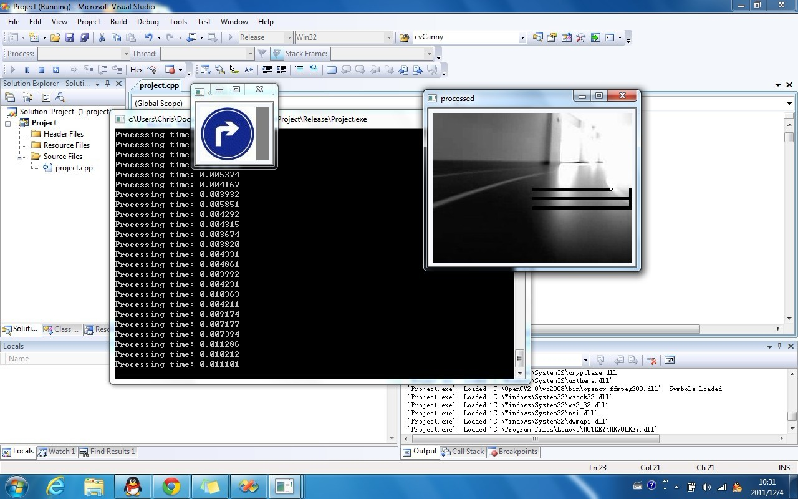
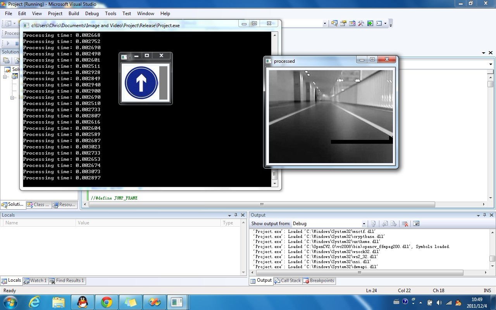

CS 585 Project: Lane Detection in Real-Time application
Ying Ye
12/5/2011
-------------------------------------------
Method and Implementation
(1) Initialization: put the car in the middle of the lanes, then use the first video frame to get the distances between lanes and the middle of the frame image, and store them as the standard car position.
(2) Basic algorithm:
1. Starting from the middle of the image, a scan window with configurable size will move along the right direction. Inside the window, Canny algorithm is used to detect right lane.
2. If lane is not found after the window has been moved to the right side, move the window up a little, then scan again from the middle of the image. This rescanning can be performed for N (configurable) times.
3. Once find out the lane, get the distances between it and the middle of the image; compare it with the standard position to get a direction control advice.
4. Without the left lane detection module, just use the control advice to set the car behavior.
(3) Left lane detection (LLD): LLD module can be enabled and disabled dynamically to balance accuracy and computing cost. It does the same thing as the right lane detection (RLD) module in basic algorithm except moving the scan window to the left.
(4) Algorithm 2:
1. If LLD is enabled, then, after getting a control advice from RLD, run LLD and get another direction control advice.
2. Then:
if one of the two modules fails to find the lane, take the other's control advice to set the car;
if they both fail, slow down the car;
if they both work but have different advices, take advice from the module that has a result of larger deviation from the standard position;
if they work and have the same advice, take it.
(5) Feature:
Dynamically adjust the starting position of scan window according to the driving speed:
if the speed increases, the starting position of scan window will be moved up a little to get position information of lane segments further away.
if the speed decreases, it will be moved down a little.
-------------------------------------------
Experiments
I got two videos from OTCBVS benchmark and worked with them. Note that the first several moving distances printed are not reliable because of the Gaussian model initialization process.
-------------------------------------------
Results
Basic:

Rescanning in basic:

With LLD:


Scan position adjustment:

Basic with larger scan window:

-------------------------------------------
Discussion
(1) For simple environment, the system can detect the lanes very quickly, but it will be slower if the environment is hard for detection. We can turn off or weaken the rescanning feature to speed up the system at the cost of occasional detection failures.
(2) The LLD can enhance the system accuracy, but will double the computing cost of lane detection.
(3) Small scan window can make the system fast, but is sensitive to noises in the image; larger scan window handles noises better, but adds computing cost.
-------------------------------------------
Conclusion
The system should be dynamically configured to adapt to different environments in order to get an accurate result with reasonable cost.